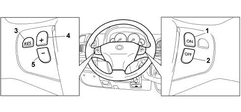
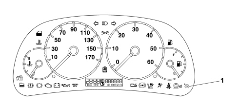

CRUISE CONTROL
- Path
- Descriptions > 55 ELECTRICAL EQUIPMENT > CRUISE CONTROL
- Kind
- system description
- Applies to
- all engines; all production periods
- Interactive page
- https://sloeber94.github.io/elrnDB-fDct/en/#/244000440
Applies to: all engines; all production periods
OPERATION
- Systems for the control of petrol engines with motorised throttle and diesel engines with electronic control of injection time offer Cruise Control as a function, i.e. a system that automatically maintains a cruising speed set by the driver.
- The electronically controlled Cruise Control system makes it possible to drive the vehicle at the desired speed without pressing the accelerator pedal. This makes driving on motorways less tiring, especially on long journies, because the speed memorized is maintained automatically.
- The electronic system is managed by the injection control unit. It automatically maintains the cruising speed set by the user and this is implemented by means of a control on the motorized throttle.
- The Cruise Control system may be fitted on vehicles with either manual or automatic transmission connected to the engine management system at the CAN.
- The speed regulator is controlled by a series of buttons on the steering wheel.
- The location of the Cruise Control system control is illustrated in the diagram.

1) ON device activated
2) OFF device deactivated
3) RES used to restore the speed memorized
4) + desined to memorize and maintain the vehicle speed or to increase the speed memorized
5) (-) used to decrease the speed memorized.
- The device is switched off automatically in any one of the following cases:
*- by pressing the brake pedal;
*- by pressing the clutch pedal;
*- by moving the automatic gear lever to position N
Whilst driving with the Cruise Control on, never place the gear lever in neutral and do not move the automatic gear lever into position N. It is advisable to only set the cruise cotnrol to a constant speed when traffic and road conditions mean it can be done in complete safety, i.e.: on straight, dry roads, traffic moving smoothly and smooth road surface.
The Cruise Control should only be switched on when the speed is above 40 km/h. The device should only be turned on in 4th of 5th gear depending on the speed of the vehicle. On vehicles with automatic electronic transmission, it should only be switched on with the gear lever in position D, in automatic operation, without then moving the gear lever manually or in 3rd of 4th speed in sequential operation. The speed of the vehicle may increase when driving downhill with the device on
MEMORIZING THE PRESELECTED SPEED
- To activate the operation of the Cruise Control:
*- press button 1 and let the vehicle reach the desired speed normally.
*- let the vehicle reach the desired speed; it should be remembered that the Cruise Control can only be activated for speeds above 40 km/h. It is advisable to engage it in fourth gear or higher where the road conditions allow the speed set to be maintained safely.
*- press button 4 for at least three seconds, then release it. The vehicle speed remains memorized and the accelerator pedal can then be released.
*- the green warning light in the instrument panel (NQS) should come on constantly with the signal coming from the engine management control unit (NCM), via the CAN, indicating the Cruise Control operating status. The warning light going out indicates that the system is deactivated.

1) Cruise Control activation warning light
- The vehicle will continue driving at the constant speed memorized until one of the following conditions occurs:
*- the brake pedal is pressed;
*- the clutch pedal is pressed;
*- the automatic gear lever is moved to position N
RESUME BUTTON FUNCTION
- This function makes it possible, by pressing button 3 (RES) to return the vehicle to the last speed value memorized if the Cruise Control has been switched off in certain circumstances (for example, by operating the brake or clutch pedal).
- In the case of a manual transmission, the same gear must be engaged as when the speed was set. If a speed value was not memorized, pressing the button has no effect.
- To restore the speed memorized, proceed as follows:
*- accelerate gently until a speed close to that memorized is reached;
*- engage the gear selected at the time the speed was memorized (4th or 5th);
*- press button 3.
ALTERING THE SPEED MEMORIZED
Increasing the speed memorized
- The speed memorized can be increased in two ways:
*- by pressing the accelerator and then memorizing the new speed reached (pressing button 4 for more than three seconds);
*- by pressing button 4 briefly: each press corresponds to an increase in speed of 2.5 km/h, whilst pressing it continuously corresponds to a continuous increase in speed. When the button is released, the new speed will be automatically memorized.
Decreasing the speed memorized
- The speed memorized can be decreased in two ways:
*- switching off the device (for example by pressing the brake pedal) and then memorizing the new speed (pressing button 4 for at least three seconds);
*- pressing button 5 until the new desired speed is reached and it remains memorized automatically.
Zeroing the speed memorized
- The speed is automatically zeroed by:
*- switching off the engine;
*- pressing button 2.
- Do not switch the device on in town or in heavy traffic conditions.
DEACTIVATING THE CRUISE CONTROL (BY THE USER/SUBSYSTEMS)
- The Cruise Control is deactivated by the user by:
*- pressing button 2 (OFF),
*- switching the engine off;
*- operating the clutch pedal or brake pedal (in such cases, the last speed achieved is stored and can be recalled by pressing the Resume button);
*- vehicle speed below the minimum permitted (40 km/h) or above the maximum permitted;
*- activating the automatic gearbox selector lever in position P, N, R (on the robotized gearbox the information is on the CAN); on manual gearboxes, if the lever is activated without using the clutch, consistency between the engine speed and the vehicle speed starts to fail; in all these cases pressing the resume button allows the system to be reactivated.
*- activating the accelerator with the Cruise Control activated: by pressing the accelerator (for example to overtake) the Cruise Control system allows a momentary increase in the speed of the vehicle being momentarily deactivated, but as soon as the accelerator pedal is no longer pressed, the system reactivates the speed setting memorized.
- The recognition of the gear engaged with the vehicle moving on automatic transmission is available at the CAN; for manual gearboxes the recognition of the gear engaged takes place by comparing the vehicle speed with the engine speed with the clutch engaged.
- For safety reasons the ASR (Antislip Regulation) and VDC (Vehicle Dynamic Control) functions take priority over the Cruise Control; when the inteversion of the ASR/VDC is over the Cruise Control is automatically reactivated at the last speed value memorized.
- The Cruise Control is automatically deactivated if:
*- the acceleration is above the calibrated limit (e.g. a steep descent);
*- the deceleration is above a calibrated limit: the gear selector lever is activated without using the clutch.
- The system turns off automatically when the signals used by the Cruise Control software are incorrect because they are due to component defects:
*- vehicle speed sensor;
*- accelerator pedal potentiometer;
*- brake/brake light switch plausibility;
*- clutch switch plausibility;
*- lever position on automatic transmissions;
*- Cruise control switch plausibility and Resume key;
*- Cruise control switch plausibility and (+) (-) keys;
- The Cruise Control system is also deactivated if errors occur in components that impair engine operation, namely:
*- engine management control unit;
*- engine rpm sensor;
*- electronic throttle body sensors/actuators (for petrol engines);
*- engine load meter (for petrol engines),
*- ignition coils (for petrol engines),
*- injectors;
*- high pressure system components (for diesel engines);
*- turbo sensors/actuators (if fitted).